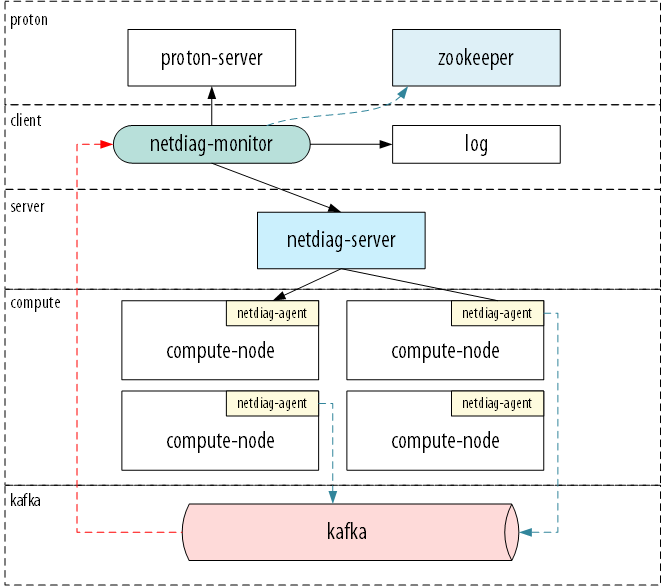
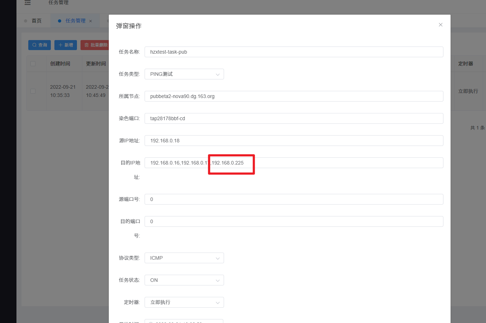
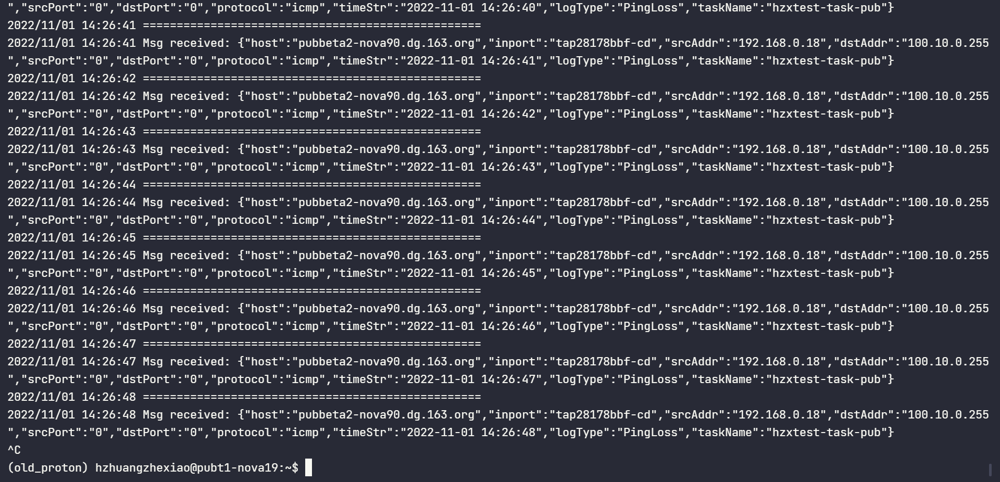
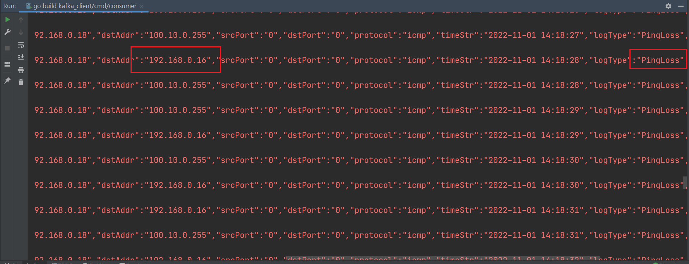
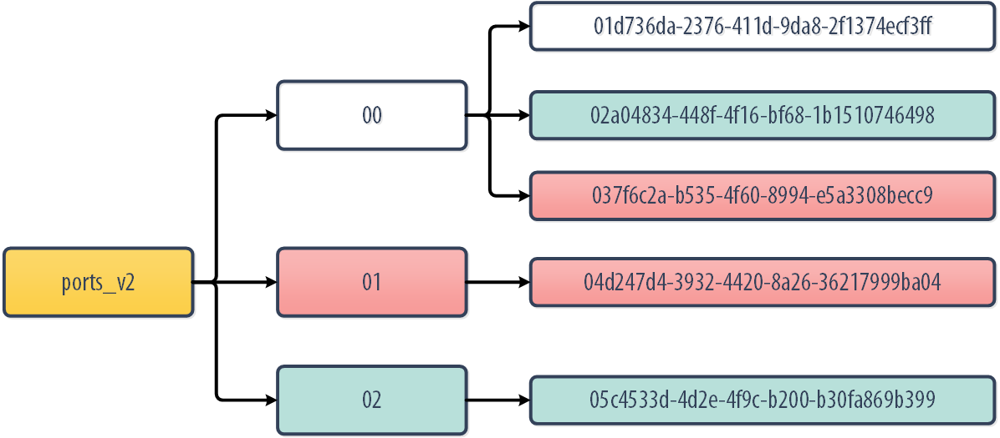
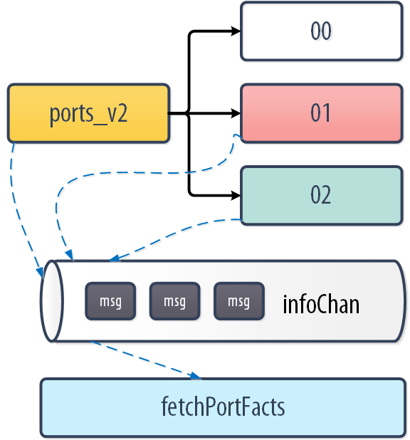

使用姿势
设计
- 用户提供信息，tenant - vpc
- 调用proton ：获取vpc – vm/node/fix-ip
- 拼装信息： curl 请求
- watch kafka，定位异常。
- 调用哨兵–报警

关键参数说明：
-
taskType:2，2即ping探测任务
-
dstAddr:172.16.1.98,172.16.1.103,172.10.1.20，目的地址支持使用逗号分隔的地址列表
-
timer:12,新增了2中定时器，11-立即执行，立即执行仍然需要配置timeout的时间，12-一直执行，一直执行的任务不用配置timeout并且会一直运行
任务停止的方式：
删除任务或者将timer修改为0-永不执行
测试机器，需要挂载cloudvpn
api 节点: pubt1-nova-vpc-node3.yq.163.org
测试节点
1
2
3
4
5
6
7
8
9
10
11
12
13
14
15
|
curl -X POST http://127.0.0.1:8888/taskinfo/createTaskInfoPub -H 'Content-Type: application/json' -d \
'{
"taskName": "hzxtest-task-pub",
"taskType": 2,
"nodeName": "pubbeta2-nova90.dg.163.org",
"portName": "tap28178bbf-cd",
"srcAddr": "192.168.0.18",
"dstAddr": "192.168.0.16,192.168.0.17,100.10.0.255",
"srcPort": 0,
"dstPort": 0,
"protocol": 1,
"timer": 12,
"startTime": "2022-07-21T00:15:39.000Z",
"timeout": 1221
}'
|
日志目录：
1
|
less /var/log/netdiag_agent.log
|
测试结果
新建一个测试任务，其中一个ip是不通的。

查看日志：
1
2
3
4
5
6
7
8
9
10
11
12
13
14
15
16
17
18
19
20
21
22
23
24
25
|
2022/09/21 10:46:09 task_handler.go:312: debug [netdiag-agent/pkg/task.(*TaskInfo).Stop] [>>>>>>>>>>>>>>>>>>>>>>>>>>>>>>>>>>>>>>>>>>>>>>>>>>>>>]
2022/09/21 10:46:09 task_handler.go:316: warn [netdiag-agent/pkg/task.(*TaskInfo).Stop] [#### Stop task(hzxtest-task-pub)]
2022/09/21 10:46:09 task_handler.go:375: warn [netdiag-agent/pkg/task.(*TaskInfo).Run] [ ## Task(hzxtest-task-pub) be stoped]
2022/09/21 10:46:09 task_handler.go:300: warn [netdiag-agent/pkg/task.(*TaskInfo).Ping] [ ## Ping(hzxtest-task-pub) be stoped]
2022/09/21 10:46:09 fastping.go:110: warn [netdiag-agent/pkg/fastping.(*Pinger).Run] [ ## Pinger be stoped]
2022/09/21 10:46:09 fastping.go:111: warn [netdiag-agent/pkg/fastping.(*Pinger).Run] [ ## Pinger stop RecvICMP]
2022/09/21 10:46:09 fastping.go:179: warn [netdiag-agent/pkg/fastping.(*Pinger).recvICMP] [ ## RecvICMP be stoped]
2022/09/21 10:46:09 fastping.go:187: warn [netdiag-agent/pkg/fastping.(*Pinger).recvICMP] [ ## RecvICMP exit]
2022/09/21 10:46:09 fastping.go:134: warn [netdiag-agent/pkg/fastping.(*Pinger).Run] [ ## Pinger exit]
2022/09/21 10:46:09 task_handler.go:306: warn [netdiag-agent/pkg/task.(*TaskInfo).Ping] [ ## Ping(hzxtest-task-pub) exit]
2022/09/21 10:46:09 task_handler.go:322: debug [netdiag-agent/pkg/task.(*TaskInfo).Stop] [<<<<<<<<<<<<<<<<<<<<<<<<<<<<<<<<<<<<<<<<<<<<<<<<<<<<<]
2022/09/21 10:46:09 access.go:228: debug [netdiag-agent/pkg/openflow.(*Access).DelFlow] [/usr/bin/ovs-ofctl del-flows br-int -Oopenflow13 table=0,cookie=0x778800010025/0xffffffffffff]
2022/09/21 10:46:09 task_handler.go:331: debug [netdiag-agent/pkg/task.(*TaskInfo).Run] [ >> Tasks that run immediately and directly << 0xc0003f2140]
2022/09/21 10:46:09 access.go:251: debug [netdiag-agent/pkg/openflow.(*Access).SetFlow] [/usr/bin/ovs-ofctl add-flow br-int -Oopenflow13 cookie=0x778800010025,table=0,priority=200,icmp,nw_dst=192.168.0.18,nw_tos=116 actions=output:pingtest]
2022/09/21 10:46:09 task_handler.go:383: warn [netdiag-agent/pkg/task.(*TaskInfo).Run] [ ## Task(hzxtest-task-pub) exit]
2022/09/21 10:46:10 task_handler.go:263: error [netdiag-agent/pkg/task.(*TaskInfo).Ping] [PingLoss: inport=tap28178bbf-cd src=192.168.0.18 dst=192.168.0.225 time=2022-09-21 10:46:10
]
2022/09/21 10:46:11 task_handler.go:263: error [netdiag-agent/pkg/task.(*TaskInfo).Ping] [PingLoss: inport=tap28178bbf-cd src=192.168.0.18 dst=192.168.0.225 time=2022-09-21 10:46:11
]
2022/09/21 10:46:12 task_handler.go:263: error [netdiag-agent/pkg/task.(*TaskInfo).Ping] [PingLoss: inport=tap28178bbf-cd src=192.168.0.18 dst=192.168.0.225 time=2022-09-21 10:46:12
]
2022/09/21 10:46:13 task_handler.go:263: error [netdiag-agent/pkg/task.(*TaskInfo).Ping] [PingLoss: inport=tap28178bbf-cd src=192.168.0.18 dst=192.168.0.225 time=2022-09-21 10:46:13
]
2022/09/21 10:46:14 task_handler.go:263: error [netdiag-agent/pkg/task.(*TaskInfo).Ping] [PingLoss: inport=tap28178bbf-cd src=192.168.0.18 dst=192.168.0.225 time=2022-09-21 10:46:14
]
|
kafka 监听异常消息

测试pause云主机，模拟down机
1
2
3
4
5
6
|
(old_proton) hzhuangzhexiao@pubt1-nova19:~$ nova list | grep proton_large_scale_test
| b1b87917-fa44-47fa-9839-03424bf21329 | monitor-1 | ACTIVE | - | Running | proton_large_scale_test=192.168.0.16 |
| bffd42f8-9f00-4333-9e4b-0eaa03a8c533 | monitor-2 | ACTIVE | - | Running | proton_large_scale_test=192.168.0.17 |
| 79791a35-697f-4837-ae6f-4d28ab078105 | monitor-3 | ACTIVE | - | Running | proton_large_scale_test=192.168.0.18 |
| b9f8346b-620c-4f90-9592-fb82dcfb314a | snat2 | ACTIVE | - | Running | proton_large_scale_test=192.168.0.13 |
(old_proton) hzhuangzhexiao@pubt1-nova19:~$ nova pause b1b87917-fa44-47fa-9839-03424bf21329
|
可以收到192.168.0.16 down机消息

zk watch 实现

我们需要watch zk znode节点，以处理port新增、删除变动。由于我们的zk ports_v2 节点下面还有portHash，因此需要分类讨论
- port新增
- 新增的port，其porthash不存在
ports_v2下。比如05c4533d-4d2e-4f9c-b200-b30fa869b399 这个port。那么我们watch ports_v2可以收到portEventChanged消息
- 新增的port，其porthash已经存在。比如
02a04834-448f-4f16-bf68-1b1510746498这个port。那么由于我们已经watch 00， 也可以收到对应的消息
- port删除
- 删除的port，这个port删除后，其porthash下已经没有叶子znode。比如删除
04d247d4-3932-4420-8a26-36217999ba04 这种情况。不过我们测试发现，一般是删除port后其porthash的watch先收到portChildChange消息。之后其portHash也被删除，我们只需要销毁watch 01 的go协程即可。
- 删除port后，其porthash下还有其他port。比如
037f6c2a-b535-4f60-8994-e5a3308becc9 这种情况。这种情况我们由于watch 了 00 节点，也可以处理。
具体go chan消息传递如下图所示
